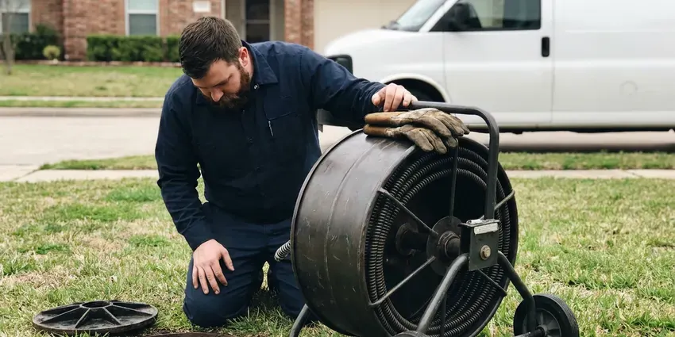

Basement Leak Repair in Cambridge, MA
Basement water is easy to misread. Our Cambridge, MA team confirms the source with meters and cameras before quoting a repair.
- Moisture Meter and Camera Testing
- Licensed and Insured
- Fast Leak Detection
- Certified Plumbers

Need Basement Leak Repair in Cambridge, MA?
We test first, so you only pay for the repair that fixes it.
Reliable Basement Leak Repair in Cambridge, MA
BWM Plumbing repairs basement leaks caused by failed supply lines, cracked drain pipes and floor drain backups. We also service sump pumps and the drain tile that feeds them. By the time a carpet edge is wet, water has usually been getting in for weeks, so we check behind walls too. Mold starts fast.
Our expertise includes:
- Moisture meter and thermal camera leak detection
- Exterior membranes and footing drains
- Hidden leak tracing in finished basements

Additional Plumbing Maintenance Services in Cambridge, MA
Our maintenance and specialty plumbing services in Cambridge, MA protect your home year-round and extend the life of every system.


Customers
Why Choose BWM Plumbing for Basement Leak Repair in Cambridge, MA?
Choosing who fixes a basement leak depends on whether they test first. A waterproofing company may sell you a perimeter drain when the real problem is a leaking supply line in the wall, and a plumber who never looks outside may miss a downspout dumping water at the foundation. We check both. You get a plain answer about which it is.
- Property Protection, We stop leaks before they feed mold or rot framing.
- Lasting Fixes, We fix the cause, like a bad fitting or poor grading, so the leak does not return.
- Accurate Diagnosis, We pinpoint the cause, a crack, a pipe or a drain, before quoting the fix.
Citywide Coverage
Walkout basements on sloped lots collect runoff from the high side of the lot. We see plenty of them. The fix is often a curtain drain or swale on the uphill side that catches surface water before it reaches the foundation, combined with checking the footing drain for silt.
Experienced Team
Thermal cameras and acoustic listening gear ride on every truck, along with a drain camera. Every technician trains on them. The tools only help if the person reading them knows what a cold water line looks like on a thermal image versus a wet spot in the drywall, and that takes practice.
Safety-First Approach
We use code-approved materials for every repair. Backwater valves and sump lines go in to the manufacturer's instructions. Where a repair touches the sewer or adds a new discharge line, we pull the permit when one is required and schedule the inspection, so the work is on record if you sell the house.
Trusted Certified Cambridge Plumbing Services Professionals
At BWM Plumbing, we are proud to offer certified plumbing services throughout Cambridge, MA. Those papers on the wall mean something. Our plumbers hold recognized industry credentials, and they follow strict safety and quality rules on every repair, installation and maintenance call we run.
Call Us Now PHCC Plumbing Contractor Recognition
PHCC Plumbing Contractor Recognition Better Business Bureau (BBB) Accreditation
Better Business Bureau (BBB) Accreditation Angi Certified Pro
Angi Certified Pro ISO 9001 Quality Management Certification
ISO 9001 Quality Management CertificationReliable Basement Leak Repair in Cambridge, MA
Waterproofing for Older Massachusetts Homes in Cambridge, MA
Older basements were often built with block walls and no exterior membrane. The housing stock in Massachusetts is among the oldest in the country, with many homes built before modern plumbing materials existed. Water collects inside hollow block cores, and weep holes at the base let it drain into a perimeter channel. Clay tile drains fail too.

Wall Crack Sealing for Basements in Cambridge
Injection works on poured concrete walls, not block. We set ports along the crack, seal the face with epoxy paste, and pump in polyurethane or epoxy from the bottom port up until resin shows at the next port. Epoxy adds strength. Polyurethane is better for active leaks because it foams on contact with water.
Wall Leak Solutions in Cambridge, MA
Damp walls without a crack often point to water soaking through porous block or concrete. Tape foil to the wall for a full day, and if the room side is wet it is condensation, not a leak. Condensation needs a dehumidifier. Seepage needs drainage outside or a channel inside.
Wall and Slab Seepage Repair in Cambridge
Seepage at the wall or the slab joint is usually surface water pooling against the foundation. Tree roots and shifting fill around old clay or cast iron sewer laterals are a frequent cause of backups in established neighborhoods. We look at gutters and grading first, since fixing them outside often stops the seepage for far less money. Cheap fixes come first.
New Sump Pump Installation in Cambridge
Installing a new sump means breaking out a section of slab, setting a lined pit, and running the discharge out through the rim joist. Most of our installs get a cast iron pump, a check valve and 1-1/2 inch discharge. Discharge cannot go into the sewer in most places. It usually ends outside, well away from the foundation, at a spot your local rules allow.
Foundation Crack Repair in Cambridge
Hairline cracks in a poured wall are common and often stay dry, but a crack that seeps after rain needs attention. Tree roots and shifting fill around old clay or cast iron sewer laterals are a common cause of backups in established neighborhoods. We inject leaking cracks from the inside with polyurethane foam, which expands into the crack and stays flexible as the wall moves. Most injections take an hour or two.
Exterior Waterproofing Solutions in Cambridge, MA
Exterior waterproofing means digging down to the footing, cleaning the wall, and applying a membrane with a drainage board over it. It is the most thorough fix and the most disruptive one. Plan on several days. We bring in a waterproofing partner for the membrane and handle the footing drain and its tie-in to a sump or daylight outlet ourselves.

Urgent Basement Leak Service in Cambridge, MA
Basement leaks rarely wait for business hours. A water heater tank can split in the middle of the night. The on-call truck carries couplings, valves and a wet vac, so the first visit usually stops the leak and restores water to the rest of the house.
Wet Basement Repair Near Me in Cambridge, MA
Hiring someone local means a plumber who knows Cambridge's housing stock. Many older blocks still run cast iron stacks and clay laterals. Newer subdivisions more often have PVC drains with sump pits that were sized for a typical year and get overwhelmed in the wettest weeks, so the fix is different on each side of town. Our trucks carry parts for both.
Searching for basement leak repair near me in Cambridge usually happens with a wet floor in front of you. Shut off the main if the water is clean and rising. A local plumber can often be at your door the same day, trace the leak with a meter and a thermal camera, and stop it before it reaches carpet or drywall in the next room. Speed limits the damage.
BWM Plumbing at a Glance
- Fully licensed plumbing team covering Cambridge, MA
- 24/7 emergency service with same-day scheduling
- Clear written estimates, no hidden fees
- 4.9-star rated by 434+ Massachusetts customers
Cambridge Map
Cambridge Information
- Population
- 118,214
- Area codes
- 617/781/857
- Service area
- Cambridge and towns within a 40 mile drive
- Nearby
- Somerville, Medford, Brookline, Everett
Basement leak repair in Cambridge, MA often traces back to a wall crack. Tree roots and shifting fill around old clay or cast iron sewer laterals are a common cause of backups in established neighborhoods. We seal the crack and look for the pressure behind it.
Talk to a Plumber
Call BWM Plumbing for honest, reliable plumbing from people who know the trade in Cambridge, MA.
Our Specialized Plumbing Services in Cambridge, MA
At BWM Plumbing, you get every kind of plumbing service from one company across Cambridge, MA. From leak detection to full system installs, our team works fast and charges fair prices on homes and commercial properties alike. Take a look at our core services below:


The Basement Leak Repair Process in Cambridge, MA
We keep you informed from the first call to the final test.
Request a Quote
Contact BWM Plumbing at (857) 335-4894 to book an inspection. We ask a few questions about the water.
Inspection
We find the source and map how far the moisture went. Photos go in your file.
Repair Plan
We explain the repair options in plain language and give a written price.
Frequently Asked Questions About Basement Leak Repair in Cambridge
Price depends on the source. A supply line or fitting repair usually runs a few hundred dollars. Crack injection and sump work cost more, and perimeter drains or exterior waterproofing can run several thousand. We quote after testing.
Most supply and drain repairs are finished in a few hours. A new sump takes most of a day. Stack and slab repairs run one to two days because surfaces get opened and patched.
For sump pumps we mostly install Zoeller and Liberty, with Wayne for some battery backups. We prefer cast iron pump housings. Injection resins and drain membranes come from commercial suppliers, matched so the parts fit.
Look for damp spots on walls or floors, a musty smell, and white chalky deposits on concrete. Those deposits are efflorescence, left behind when water evaporates. A rising water bill or rust at the water heater base points toward a plumbing leak. Smell often comes first.
Simple pipe repairs and crack injection usually do not need a permit. Bigger jobs often do. Replacing a drain stack, installing a new sump with a discharge line, adding a backwater valve, or excavating near the foundation may require a permit, and we pull it when it is needed.
Usually not, unless the leak is at an exposed fitting you can reach. A loose compression nut or a worn washer hose is fine to fix yourself. Anything involving soldering in a cramped ceiling, cutting cast iron, or tracing a leak behind finished walls is better left to a plumber with the right tools, because a wrong guess means extra holes in the drywall. Guessing gets expensive.
Zoeller, Liberty and Wayne cover most of our installs because they are durable and parts are easy to get. Primary pumps get cast iron housings. For homes that lose power in storms, we add a battery backup pump or a water-powered backup where city water pressure is strong enough, and we put a high-water alarm on the pit either way.
Yes, labor is covered by our workmanship warranty and parts by the manufacturer. Most pumps carry a multi-year warranty. Model and serial numbers stay on file with us, so a warranty claim does not require hunting for receipts.
Hear From Customers Who Hired Our Plumbing Experts

Daniel K.
A pipe burst in the garage ceiling at 11 at night. Someone answered on the second ring, and the plumber was in my driveway about fifty minutes later. He shut off the main, cut out the split section, and had water back on before 2 am.
Emergency Plumbing · Everett, MA
Greg S.
I manage a small strip center with six tenants. BWM Plumbing handles our annual backflow testing and fixed a recurring clog in the shared sewer line that had been backing into the nail salon. Their reports come in clean and on time.
Commercial Plumbing · Everett, MA
Lisa C.
Water was pouring out from under the washing machine on a holiday weekend. BWM Plumbing talked me through closing the valves over the phone and had a plumber at the house within ninety minutes. It was a burst fill hose.
Emergency Plumbing · Cambridge, MA
Patricia H.
We had a slab leak that two other companies could not find. BWM Plumbing located it in under an hour with a listening device. They rerouted the line through the attic instead of breaking up the floor, so we kept our kitchen tile.
Slab Leak Repair · Medford, MA
Marcus H.
Grease from the fryer line kept clogging the kitchen drain at my diner. BWM Plumbing hydro jetted the line after closing, showed me the buildup on camera, and set us up on a quarterly cleaning so it does not catch us on a Friday again.
Drain Cleaning · Malden, MANathan E.
Our tankless heater kept throwing an error code and shutting off mid shower. The tech flushed the heat exchanger, which was full of scale, and replaced a bad flow sensor. Hot water has been steady for half a year now.
Water Heater Repair · Newton, MA